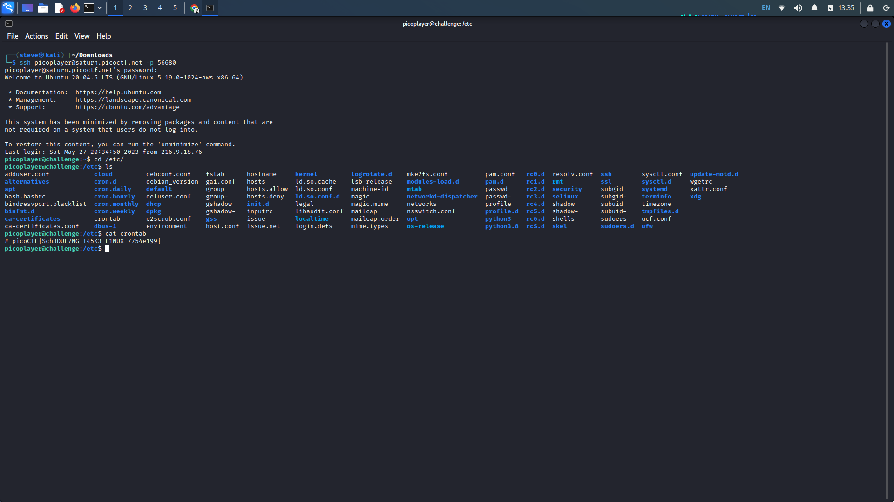

keygenme-py
Description: How to automate tasks to run at intervals on linux servers? Additional
details will be available after launching your challenge instance.
Writeup: Upon initiating the challenge instance, we are provided with the details for an
SSH connection. Establish an ssh connection to the challenge (username)@(server) -p.
To find the list of automated commands on a given system, we must locate the
'crontab' file. This contains a list of commands that are executed on a regular schedule and is located
in the /etc directory. Concatenating the file gives us the flag.
